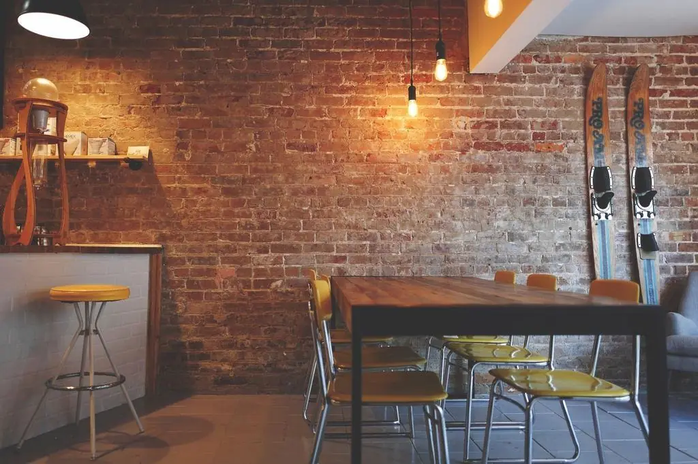
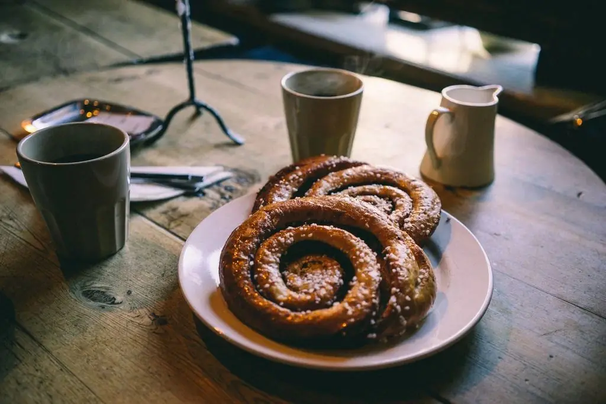

Meny
Frukost, lunch, fika och bröd att ta med – med priser.
Frukost, fika och lunch
Frukostbricka
Allt du behöver för att komma igång.
119 krvardagar 7–10, helg 8–11- Surdegsbröd, smör och ost
- Kokt ägg och yoghurt med granola
- Färskpressad apelsinjuice
- Kaffe eller te med påtår
- Mest beställd
Fika för två
Två bakverk ur disken och två koppar kaffe.
149 krhela dagen- Valfria bullar eller wienerbröd
- Bryggkaffe, te eller cappuccino
- Påtår för tio kronor
- Havremjölk utan extra kostnad
Lunch
Soppa, paj eller smörrebröd på bageriets bröd.
fr. 109 krvardagar 11–14- Nybakat bröd och smör
- Sallad från disken
- Kaffe och en liten kaka
- Vegetariskt alternativ varje dag
Hela menyn
| Kaffe, bryggt (påtår 10 kr) | 34 kr |
|---|---|
| Cappuccino eller latte | 45 kr |
| Te från lösvikt | 32 kr |
| Kardemummabulle eller kanelbulle | 39 kr |
| Wienerbröd med vaniljkräm | 44 kr |
| Kladdkaka med grädde | 45 kr |
| Semla (fettisdagen till påsk) | 52 kr |
| Frukostbricka | 119 kr |
| Gröt med lingon och mjölk | 59 kr |
| Dagens soppa med bröd | 115 kr |
| Dagens paj med sallad | 125 kr |
| Smörrebröd, två sorter | 109 kr |
| Rågsurdeg Brynäs, 800 g | 72 kr |
| Prinsesstårta, 8 bitar | 445 kr |
| Smörgåstårta, per bit (fr. 10 bitar) | 79 kr |
Alla priser inklusive moms. Fråga i kassan om allergener – vi har glutenfritt på torsdagar.
Så beställer du tårta
- 1
Beställ
Ring eller skriv vilken tårta, hur många bitar och vilken dag du vill hämta.
- 2

Vi bekräftar
Du får en bekräftelse med pris och hämttid samma dag.
- 3

Vi bakar
Tårtbottnar och fyllning görs dagen innan, och tårtan dekoreras samma morgon.
- 4

Hämta i disken
Tårtan står kall i disken från klockan sju på hämtdagen.
Kan jag boka bord?
Nej, vi har inga bordsbokningar. Till sällskap på fler än åtta personer kan du ringa så ställer vi i ordning ett långbord.
Har ni glutenfritt?
Ja, glutenfritt bröd och kakor bakas varje torsdag i en egen ugn. Det finns i frysen resten av veckan.
Hur långt i förväg ska jag beställa tårta?
Senast tre dagar innan hämtning. Till studenten och midsommar gärna två veckor innan.
Har ni laktosfria alternativ?
Havremjölk till kaffet ingår, och vi har alltid en laktosfri kaka och laktosfritt smör till brödet.
Kan jag beställa bröd till kontoret?
Ja, vi levererar frukostbröd och kaffebröd till företag i Gävle från tio personer, vardagar före klockan nio.
Får man ta med hund?
Ja, på uteserveringen. Där finns vattenskål och hundgodis vid disken.